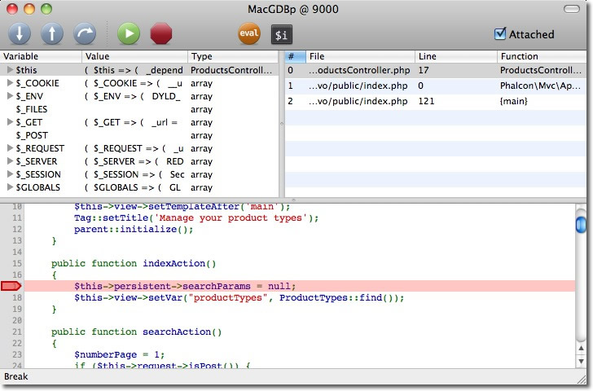

內容目录上一个主题下一个主题Phalcon 开发工具（Phalcon Developer Tools） > 本页 |
调试应用程序（Debugging Applications）¶

Phalcon中提供了提供了几种调试级别即通知，错误和异常。 异常类 Exception class 提供了错误发生时的一些常用的调试信息如文件，行，消息，错误代码，跟踪信息等。 Phalcon主要使用这个异常类来包装这些功能，以方便开发者或用户使用。 尽管Phalcon是使用C语言书写的，但其依然如其它的PHP框架般提供了一些必须的调试工具，PHP本身提供的调试工具亦然可以正常使用。 捕获异常（Catching Exceptions）¶纵观Phalcon的文档及其提供的例子程序， 有一个最直接的捕获异常的方法即是使用try/catch块： <?php
try {
//... some phalcon/php code
} catch(\Exception $e) {
}
try/catch块内发生的异常会被捕获然后放入 $e 变量。 开发者可以使用 Phalcon\Exception （扩展自 Exception class ）来确定异常信息是来自Phalcon还是PHP本身。 PHP产生的所有异常都是基于 Exception class ， 且至少含有如下元素： <?php
class Exception
{
/* Properties */
protected string $message;
protected int $code;
protected string $file;
protected int $line;
/* Methods */
public __construct ([ string $message = "" [, int $code = 0 [, Exception $previous = NULL ]]])
final public string getMessage ( void )
final public Exception getPrevious ( void )
final public mixed getCode ( void )
final public string getFile ( void )
final public int getLine ( void )
final public array getTrace ( void )
final public string getTraceAsString ( void )
public string __toString ( void )
final private void __clone ( void )
}
如从 Exception class 中取得异常信息一样， 我也可以从 Phalcon\Exception 中取异常信息。 <?php
try {
//... app code ...
} catch(\Exception $e) {
echo get_class($e), ": ", $e->getMessage(), "\n";
echo " File=", $e->getFile(), "\n";
echo " Line=", $e->getLine(), "\n";
echo $e->getTraceAsString();
}
因此， 开发者可以非常容易找出在哪个文件中哪一行产生的异常信息，也可以看到异常信息涉及到的模块： PDOException: SQLSTATE[28000] [1045] Access denied for user 'root'@'localhost'
(using password: NO)
File=/Applications/MAMP/htdocs/invo/public/index.php
Line=74
#0 [internal function]: PDO->__construct('mysql:host=loca...', 'root', '', Array)
#1 [internal function]: Phalcon\Db\Adapter\Pdo->connect(Array)
#2 /Applications/MAMP/htdocs/invo/public/index.php(74):
Phalcon\Db\Adapter\Pdo->__construct(Array)
#3 [internal function]: {closure}()
#4 [internal function]: call_user_func_array(Object(Closure), Array)
#5 [internal function]: Phalcon\DI->_factory(Object(Closure), Array)
#6 [internal function]: Phalcon\DI->get('db', Array)
#7 [internal function]: Phalcon\DI->getShared('db')
#8 [internal function]: Phalcon\Mvc\Model->getConnection()
#9 [internal function]: Phalcon\Mvc\Model::_getOrCreateResultset('Users', Array, true)
#10 /Applications/MAMP/htdocs/invo/app/controllers/SessionController.php(83):
Phalcon\Mvc\Model::findFirst('email='demo@pha...')
#11 [internal function]: SessionController->startAction()
#12 [internal function]: call_user_func_array(Array, Array)
#13 [internal function]: Phalcon\Mvc\Dispatcher->dispatch()
#14 /Applications/MAMP/htdocs/invo/public/index.php(114): Phalcon\Mvc\Application->handle()
#15 {main}
从上面我们可以看到异常信息中有Phalcon的类及方法，甚至调用时的参数也显示了出来。 如果需要可以使用 Exception::getTrace 获取更多的信息。 调试组件（Debug component）¶Phalcon提供的调试组件可以使开发者更容易的定位代码中的错误。 下面的视频中展示了如何工作的： 要打开调试功能只需要如下做： <?php
$debug = new \Phalcon\Debug();
$debug->listen();
注意一定要去掉Try/Catch块才可以， 否则异常信息不会正确的输出（事实上很多时候Phalco显示异常信息是非常耗时的）。 反射与内省（Reflection and Introspection）¶Phalcon的类的实例通常比一般的类实例更复杂。 这里我们可以使用 ‘Reflection API’_ (反射机制) 或 直接打印其内部状态来观其究竟： <?php
$router = new Phalcon\Mvc\Router();
print_r($router);
开发者可以非常容易的观察到对象内部的状态。 上面的代码输出如下： Phalcon\Mvc\Router Object
(
[_dependencyInjector:protected] =>
[_module:protected] =>
[_controller:protected] =>
[_action:protected] =>
[_params:protected] => Array
(
)
[_routes:protected] => Array
(
[0] => Phalcon\Mvc\Router\Route Object
(
[_pattern:protected] => #^/([a-zA-Z0-9\_]+)[/]{0,1}$#
[_compiledPattern:protected] => #^/([a-zA-Z0-9\_]+)[/]{0,1}$#
[_paths:protected] => Array
(
[controller] => 1
)
[_methods:protected] =>
[_id:protected] => 0
[_name:protected] =>
)
[1] => Phalcon\Mvc\Router\Route Object
(
[_pattern:protected] => #^/([a-zA-Z0-9\_]+)/([a-zA-Z0-9\_]+)(/.*)*$#
[_compiledPattern:protected] => #^/([a-zA-Z0-9\_]+)/([a-zA-Z0-9\_]+)(/.*)*$#
[_paths:protected] => Array
(
[controller] => 1
[action] => 2
[params] => 3
)
[_methods:protected] =>
[_id:protected] => 1
[_name:protected] =>
)
)
[_matchedRoute:protected] =>
[_matches:protected] =>
[_wasMatched:protected] =>
[_defaultModule:protected] =>
[_defaultController:protected] =>
[_defaultAction:protected] =>
[_defaultParams:protected] => Array
(
)
)
使用 XDebug（Using XDebug）¶XDebug 是一个非常好（神奇）的调试工具，其和PHP内部调试工具一起为我们提调试工具（可以和PHP内置的调试工具互补）。 XDebug 也是一个PHP扩展， 所以二者可以一起使用，而且不需要额外的配置。 下面的视频中展示了Phalcon中使用XDebug的情况： 一旦安装了xdebug, 开发者便可以使用其API来取得更多的异常信息和其它信息： 我们强烈推荐至少使用XDebug 2.2.3 以提供与Phalcon最佳的兼容性。下面的例子中调用了 xdebug_print_function_stack 方法， 并返回了该方法产生的代码跟踪结果. <?php
class SignupController extends \Phalcon\Mvc\Controller
{
public function indexAction()
{
}
public function registerAction()
{
// Request variables from html form
$name = $this->request->getPost("name", "string");
$email = $this->request->getPost("email", "email");
// Stop execution and show a backtrace
return xdebug_print_function_stack("stop here!");
$user = new Users();
$user->name = $name;
$user->email = $email;
// Store and check for errors
$user->save();
}
}
这个例子中， XDebug显示出了局部变量和代码的跟踪信息： Xdebug: stop here! in /Applications/MAMP/htdocs/tutorial/app/controllers/SignupController.php
on line 19
Call Stack:
0.0383 654600 1. {main}() /Applications/MAMP/htdocs/tutorial/public/index.php:0
0.0392 663864 2. Phalcon\Mvc\Application->handle()
/Applications/MAMP/htdocs/tutorial/public/index.php:37
0.0418 738848 3. SignupController->registerAction()
/Applications/MAMP/htdocs/tutorial/public/index.php:0
0.0419 740144 4. xdebug_print_function_stack()
/Applications/MAMP/htdocs/tutorial/app/controllers/SignupController.php:19
使用xdebug我们可以使用若干种方法来取得关phalcon应用的调试信息。更多信可以参看这里的 XDebug documentation （ XDebug 文档）。 |